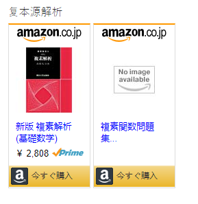

創造情報学入学試験について
[TOC]
1.試験涉及内容
| 基础科目 | 科目 | 考过的名词 | 考过的知识点 | 教材 | 是否已学 |
|---|---|---|---|---|---|
| 線形代数(线性代数) | 《演習大学院入試問題〈数学〉I》 | Y | |||
| 复数分析 | Y | ||||
| 矢量分析 | |||||
| 解析（数学分析) | 《複素関数問題集》《新版 複素解析 (基礎数学)》《演習と応用 ベクトル解析.》《微分方程式問題集》《演習微分積分..》 | Y | |||
| 確率・統計 （概率与统计） [注意名词] | 共分散分析(协方差分析) | 《演習 大学院入試問題[数学]II》 | I | ||
| 专业科目 | 科目 | 考过的名词 | 考过的知识点 | 教材 | 是否已系统学习 |
| アルゴリズム（数据结构\算法） | 旅行商问题,分治法 | 《データ構造とアルゴリズム 》 | Y | ||
| 深度学习** | CPU加速、增强学习 | ||||
| 自然语言处理** | TD-IDF | ||||
| 计算机视觉** | |||||
| 机器学习** | 线性回归 | ||||
| 論理回路(数字电路) | 组合数字电路 | 《論理回路入門》 | Y | ||
| 操作系统 | 《オペレーティングシステムの仕組み》《オペレーティングシステム (情報処理入門コース 2)》 | I | |||
| 计算机组成原理 | 流水线风险,register renaming<计算机体系结构> | 《コンピュータアーキテクチャ》《コンピュータの構成と設計~ハードウエアとソフトウエアのインタフェース 第3版 》 | Y | ||
| 计算机网络 | TCPウィンドウ制御 | I | |||
| 计算机图形学** | |||||
| 形式语言与自动机 | RE和RG | I | |||
| 编译原理** | register renaming(寄存器重命名) | ||||
| 软件工程 | 持续集成 | 《ソフトウェア工学の基礎知識 》 | Y | ||
| 网络安全 | ゼロデイ攻撃 | N | |||
| 机器人论** | |||||
| 密码学** | 公钥和私钥 | ||||
| 离散数学 | Y | ||||
| 信息论 | 《情報理論》 | ||||
| 通信原理 | Vector quantization,Kalman filter | ||||
| 控制论 |
夏入试可选数学或者编程。
冬入试只能选编程。
算法书籍；
ACM/ICPCの問題集
AIZU ONLINE JUDGE: Programming Challenge
プログラミングコンテストチャレンジブック [第2版] ?問題解決のアルゴリズム活用力とコーディングテクニックを鍛える?
数学书籍：

2.真实面试问题
1.「当該分野について何か勉強などしていますか？その内容について説明してください」(在这个领域有学过什么吗?说明一下)
2.卒論などこれまで行って来た研究についておしえて(请说一下毕业论文还有来这之后的研究打算)
3.语义说明对策
アルゴリズム・システムアーキテクチャ＞情報理論・離散数学＞＞プログラミング用語＞暗号理論＞人工知能・ロボット・CG＞＞データベース・ネットワーク
算法数据结构，系统结构>情报理论离散数学>编程语言>密码学>人工智能,机器人论,CG>>数据库计算机网络
方法：利用维基
勉強手順
wikiを見て軽く理解する→４～８行で説明出来るか確認する→出来たら次の言葉へ、出来なかったらwikiを読み直す
この繰り返しで語彙を増やすことができます。また、説明の際に図を書くと高い点数がもらえる傾向にあるそうなので、意識して勉強するといいかもしれません
对于某个词汇首先在wiki上简单了解。然后用4~8行文字说明出来。如果能说明出来的话，就进入下一个词语。不行的话重新看wiki.直到可以。
然后说明时画图有高分倾向，最好养成习惯.
4.大题结构
問1
特点:出题范围窄，好好研究算法就行
出过的问题:
（10）斐波那契数列和高数化
（10）背包问题
（09）有向最短路径
（08）记录和顺序搜索、二分搜索、散列表
（07）整数和约数个数、素因数分解
（08）ソーティングネットワーク、复杂度分析
（05） 文字列置換、削除、追加、編集距離、再帰式
問2
特点：涉及硬件、OS、记忆与技巧为主的东西较多,词汇题中也常出现
出现过的问题:
2010冬 状態遷移図(ミーリ型・ムーア型)、回路図 （状态转移图、电路图）
2010夏 命令セットアーキテクチャの設計（指令集设计）
2009 加算器と乗算器と遅延時間の減少方法 （减少加法器和乘法器延迟时间的方法）
2008 同期式4bit4桁カウンタの設計、状態遷移、Dフリップフロップ、遅延時間 （同步44计数器,状态迁移,D触发器,延迟时间）
2007 並列コンピュータの排他制御（プログラムも）、test and set、compare and swap、セマフォ、メッセージ通信、3台以上のコンピュータの制御
2006 センサからのデータ入力、プログラムの時間ダイアグラム、並列処理システム設計の際の注意点
2005 プロセッサのキャッシュメモリ、2-way set associativeのキャッシュメモリのブロック図、ヒット率向上のハードウェア技術とプログラミング技法